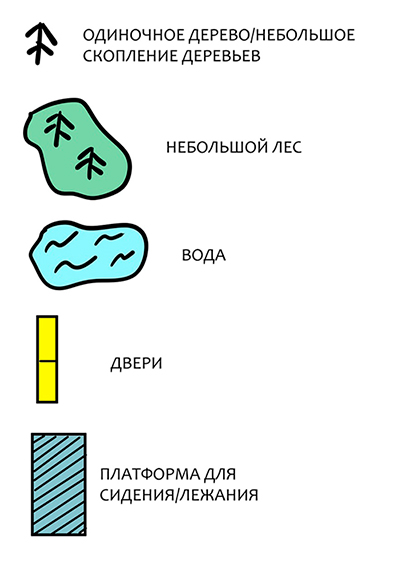
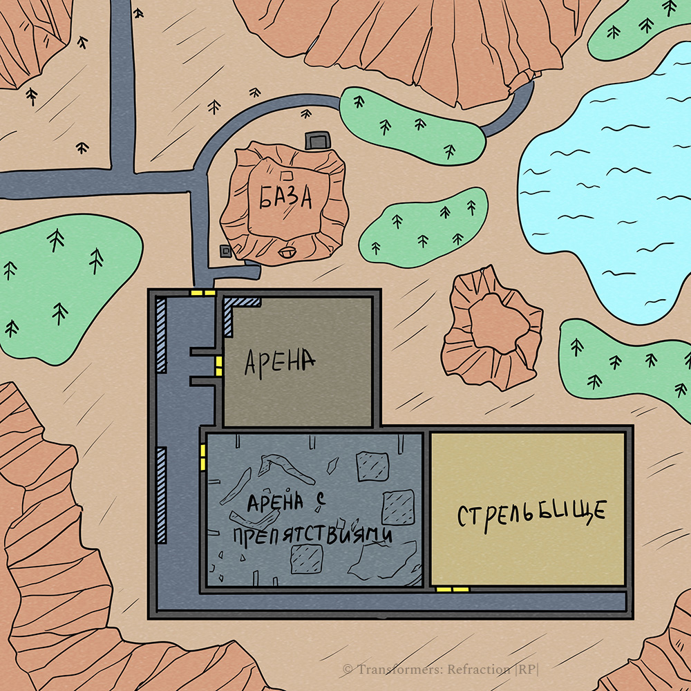

База и ее окрестности
Киберформированная Земля.
Большая часть планеты киберформирована. Все живые существа мутировали в роботизированных монстров без интеллекта и сознания с единственной потребностью - добывать себе для пропитания живой металл и топливо.
Большая часть планеты киберформирована. Все живые существа мутировали в роботизированных монстров без интеллекта и сознания с единственной потребностью - добывать себе для пропитания живой металл и топливо.
Чтобы посмотреть местоположение объекта кликните на его название ниже:
Дополнительная информация доступна при клике на подсвеченный объект или иконку


Арена
Полигон, на котором можно от всей души поснимать друг с друга стружку. Поговаривают, за это даже ничего
не будет.
Стрельбище
Еще одно тайное место...